3D Curve command
Use the 3D Sketching tab→3D Draw group→3D Curve command to create a 3D curve from a set of three or more points across different sketch planes.
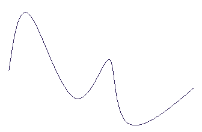
The 3D Curve command is available in all 3D Sketch environments and is supported in assembly, part, and sheet metal. You can use a 3D curve as input to other commands, such as Swept Surface, Bluesurf, Tube, and Frame.
The 3D Curve command is equivalent to the Keypoint Curve Segment command in XpresRoute and the Keypoint Curve command in Surfacing.
Creating 3D curves
You define the 3D curve by clicking three or more points. The points can be points you create with the 3D Point command, keypoints on wireframe elements and edges, or points in free space.
You can use the OrientXpres tool to help you define the location of a point on a curve. For example, you can use the triad to lock input to a particular axis or plane when creating or editing a 3D curve.

In creation mode, you can use the options on the 3D Curve command bar to define the 3D curve. For more information and examples, see the 3D Curve command bar.
-
You can select the Close Curve button to open or close the curve.
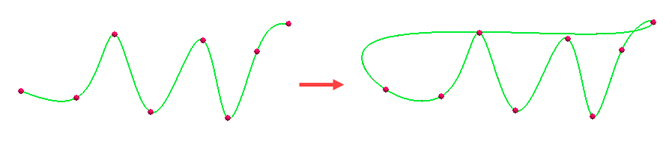
-
Use the Locate Filter options to specify the type of points you want to use to route the path. You can select cylindrical faces, keypoints of elements on the model, and XYZ points based on the selected coordinate system.
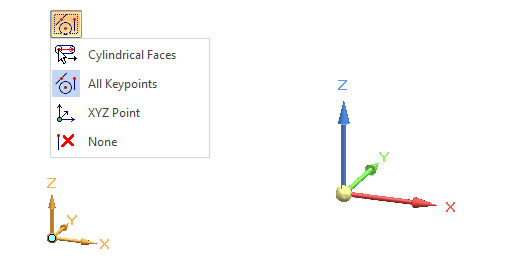
-
When you select a keypoint on a wireframe element or edge as the endpoint of the curve, you can specify whether the curve is created tangent to the wireframe element or edge you selected. To specify start and end conditions for the curve, click the Tangency Condition option (1). To change the display of the tangency control edit handles from the curve to the command bar, click Show/Hide Tangency Control Handles (2).
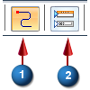
When you specify that the curve is tangent to an element at its endpoint, you can also modify the magnitude of the tangent vector by dragging the tangent vector handle to a new location. When you modify the magnitude of the tangent vector, you also may change the radius of curvature of the curve.
Moving and rotating 3D curves
After creating a 3D curve, you can click the curve
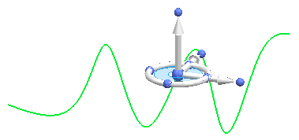
and use the steering wheel to move
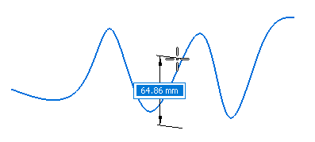
or rotate the curve.
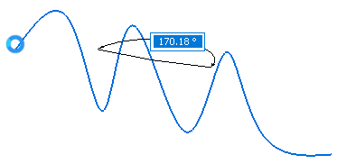
Adding and removing points in a curve
You can hold the Alt key and click to add points to the curve or to remove points from a curve. As you add or remove points, the shape of the curve changes.
To insert a point along a path, Alt+click the location along the curve where you want to add the point.

To add a point to the end of the path, while editing the curve, Alt+click a location in free space.

To remove a point, Alt+click the point you want to remove.
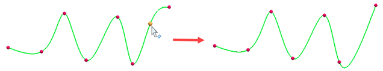
Applying a dimension to 3D curves
Use the Smart Dimension command to apply a smart dimension to a 3D curve. By default, smart dimension places the curve length.
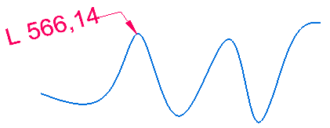
You can type a value to modify the curve length.
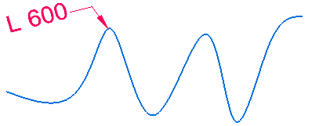
Use the Distance Between command to create a linear distance dimension between the end points, as well as two keypoints, of the curve.
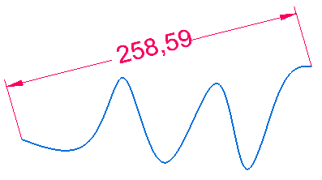
You can type a value to modify the curve length.
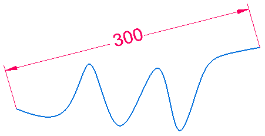
Placing the dimension between two points on the curve keeps the curve length the same.
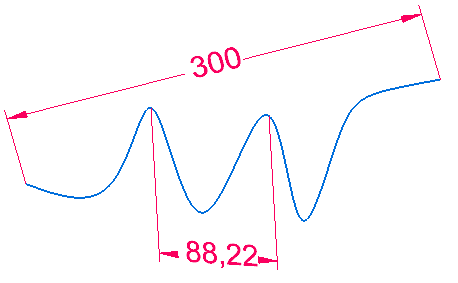
Changing the dimension between the two points changes only the distance between those points and does not change the overall distance of the curve.
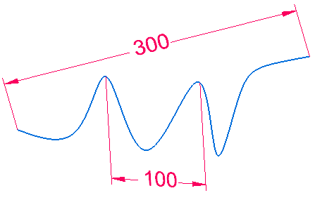
You can edit these dimensions if no other relationships are applied.
Constraining the curve length and direction
After adding a dimension to the curve, you can use the Constrain Direction option  to define the direction that the control points move when you change the curve length
by editing the dimension value. You can constrain along the X, Y and Z axis or any
linear edge/curve or axis. The increase or decrease in length bows in that direction.
to define the direction that the control points move when you change the curve length
by editing the dimension value. You can constrain along the X, Y and Z axis or any
linear edge/curve or axis. The increase or decrease in length bows in that direction.
-
Add a dimension to the curve.
-
Select the curve to edit.
-
On the edit command bar, click Constrain Direction and then select the triad axis or linear curve or edge in order to constrain the change in length in that direction.
-
Set the value in the Length box and press Enter or right-click.
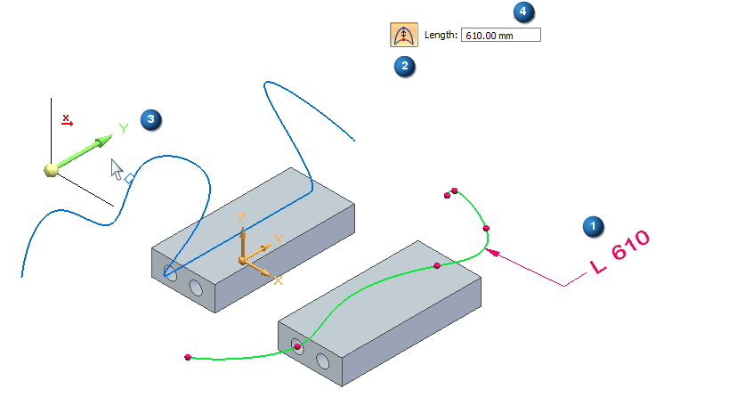
Trimming or splitting 3D curves
You can trim and split 3D curves.
Trimming the curve highlights the trim area where the curve intersects another sketch.
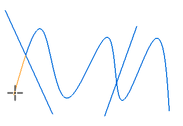
You can then trim the highlighted area.
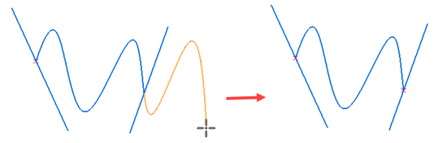
With the Split command, you can place a point where you want to split the curve.
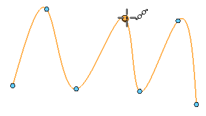
The curve splits into two sections at the point.
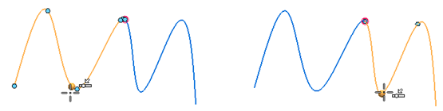
Using 3D curves in downstream features
You can use 3D curves in downstream features.
For example, you can use the 3D curve to create an extruded surface.
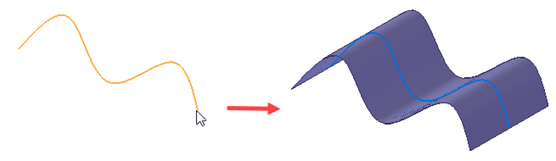
In the ordered environment, you can dynamically edit the 3D curve by changing keypoints of the curve. As you change the keypoints, the shape of the curve changes.
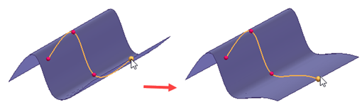
In synchronous, after you use a 3D and 2D sketch to create a feature, the sketch is placed in the Used Sketches collector and cannot be changed. Therefore, any features created from the sketch are not be updated when you update the curve in synchronous. If you need to update the feature, you must create a new surface of the edited curve.
How do I
Draw a 3D sketchCreate a 3D point using coordinates
Modify a 3D point
Create a 3D curve
Dynamically edit a 3D curve
Route a 3D sketch path between 2 points
Route a 3D curve through circular faces
Mirror 3D sketch elements
Create an equation driven curve
Split a 3D sketch element
Move 3D sketch elements
Learn more
Starting a new synchronous 3D sketchStarting a new ordered 3D sketch
Starting a new assembly 3D sketch
3D sketch relationships
Look up more details
New 3D Sketch command3D Sketch command (assembly)
Show 3D alignment lines
Activate command (3D sketching)
Copy Dimensions to Model command
3D Point command
3D Point command bar
3D Line command
3D Circle by Center command
3D Rectangle by Center command
Tangent 3D Arc command
3D Arc by 3 Points command
3D Curve command bar
OrientXpres tool
Routing Path command
Route command
Equation Driven Curve command
Equation Driven Curve command bar
Equation Driven Curve dialog box
Mirror command (3D Sketching)
3D Fillet command
3D Trim command
3D Include command
Related Topics
Enable Regions command (3D sketching)Split 3D Sketch command